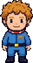

Oxygen
Sample:
not found
W A S D or arrow keys to drive · E to pick up · Esc for menu
HAZLAOUM
moon rescue
Start the drive
Main menu
NASA Space Apps 2026 · Space mission design game
Mission briefing

Our science rover stopped answering three days ago. Before it broke down it collected an
important sample
.
There is no road. The rover left the lander on its own, so follow its
wheel tracks
in the dust.
Halfway there you cross into the
lunar night
. Only your headlights show the
rover's wheel tracks
in the dust.
A blue
marker every 200 m
shows how far it is to the rover and which way to go. With the sample on board, the markers count down to the lander.
Take the sample and bring it back to the lander. Hazalqoum will fly it to Earth so the science team can find out why the rover broke.
You have
4 minutes of oxygen
. Wrong turns cost air. Craters slow the buggy down and boulders stop it.
Drive
Drive again
Main menu